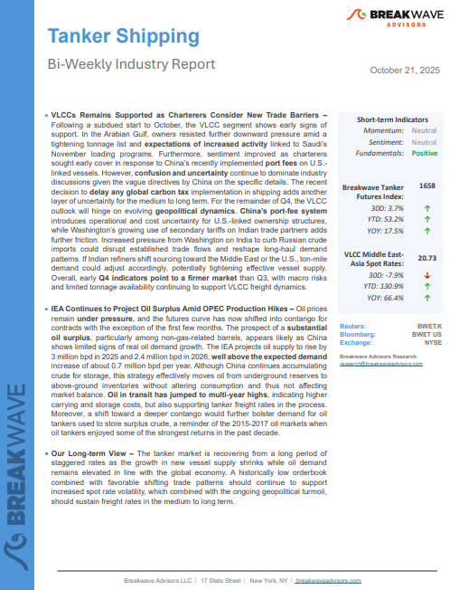
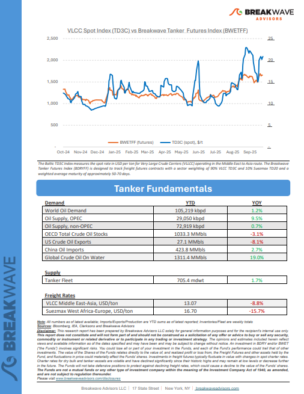

As the week comes to a close, take a moment to review the key insights from the past few days. Missed something? We've gathered all the top insights for you to catch up at your convenience.
VLCCs Remains Supported as Charterers Consider New Trade Barriers– Following a subdued start to October, the VLCC segment shows early signs of support.


After spending much of the past fortnight navigating the complexities of “U.S. and China special port fees” – including assessments of ownership structures, operational control, and even the nationality of board members – a return to core fundamentals feels necessary.
Doric Weekly Market Insights
The most recently released data shows that daily crude steel production at large and medium-sized mills in China averaged 2.03 million tons during October 1 - October 10.
From Commodore's Weekly Dry Bulk Reports
Easing trade tensions helped support sentiment, with all sectors ending the session higher. Better than expected economic data in China saw metals gain, while crude oil fell amid signs of rising supplies.
Commodities Wrap
Recent loan fraud disclosures at U.S. regional banks and bankruptcies in the auto sector have revived memories of 2008-style stress.
Forvis Mazars Weekly Note
This week’s Allied Quantumsea Research examines the latest escalation in U.S.–China trade tensions following President Trump’s announcement of a 100% tariff on Chinese imports, effective November 1.
Allied Weekly Report
Crude freight markets remain well-supported by regulatory disruptions and an oversupplied seaborne crude market.
Vortexa Freight Weekly
Over the past 24 hours the US announced sanctions on Rosneft and Lukoil and the EU has released its long-awaited 19th Russian sanctions package.
Braemar Research
As we discussed in Commodore Research's most recent Weekly China Report, September saw a total of 2.58 million vehicles sold in China.
From Commodore's Weekly Dry Bulk Reports
China’s soybean supply chain took a sharp turn south in September.
Signal Ocean Dry Weekly Market Monitor